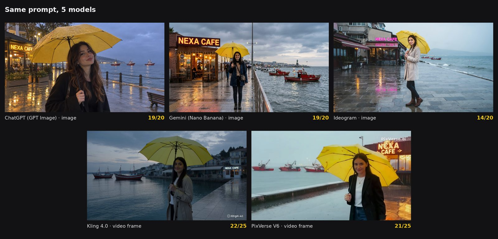
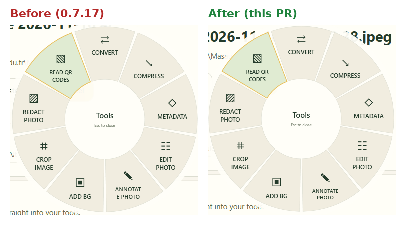

Railway Mechanical Fault Detection
A system that finds mechanical defects on railway lines from camera images using computer vision models. Received the UDHAM R&D Incentive Award.
C:\> whoami
Software Engineering student · Samsun, TR
I'm a third-year Software Engineering student at Samsun University. On our TEKNOFEST team, Kozmos Havacılık, I set up the communication between systems and designed the ground station interface. During my internship at Solvera Yazılım and in our UDHAM R&D projects, I've taken products from the first idea to a working prototype.
I like working on both ends: web, mobile and backend apps with C#, TypeScript and React, and system-level work with ROS, GStreamer and camera or sensor data.
Worked in the R&D team on product development, from the idea stage to prototype and delivery.
Samsun University's TEKNOFEST aviation team. I handled the communication between systems, managed the data flow and designed the operator and ground station interfaces.
A system that finds mechanical defects on railway lines from camera images using computer vision models. Received the UDHAM R&D Incentive Award.
An autonomous rail robot for tunnel safety and bio-chemical mapping. I designed the end-to-end architecture: e-nose sensor arrays, LoRa Mesh communication and real-time data analysis. Submitted to the UDHAM 2053 R&D competition.
A study on a lightweight electronic nose for UAVs, for places rovers can't reach on Mars or Titan. Sensor data is cleaned with a Kalman filter and classified on the microcontroller, and the ROS-based flight controller steers toward the gas source.
A gamified focus timer: work in focus sessions, take breaks and keep your streak going. Deployed on Vercel.
live app → view repo →A full-stack chat app where messages arrive instantly through SignalR. The backend is ASP.NET Core with a Supabase (PostgreSQL) database, and the frontend is React with TypeScript.
An interactive web app that shows how algorithms and data structures work, step by step.
A mobile app for keeping track of classes, exams and tasks in one place.
Internal software for a packaging company that moves stock tracking, order management and price quotes from paper to one system.
A reverse engineering sprint for a course: taking apart the modules of a clinical software with REA tools and Node.js to see how it works inside.
view repo →I wrote one prompt with an answer key fixed in advance and ran it on 5 text models, 3 image models and 2 video models under the same conditions.

| Test | Result |
|---|---|
| 10 MIHENK questions · ChatGPT, Gemini, Claude, Grok, DeepSeek | all 10/10 |
| Image · ChatGPT / Gemini / Ideogram | 19 / 19 / 14 (of 20) |
| Video · Kling / PixVerse | 22 / 21 (of 25) |
| Grok image, MiniMax video, Gemini video | no output (free limits) |
While testing nashi-app on Windows I found that the tool wheel split "ANNOTATE" between letters. I fixed it, added a regression check, and answered the AI code review with before/after test runs.

TuanaOS terminal. Type help to see the commands.
The easiest way to reach me is by email.